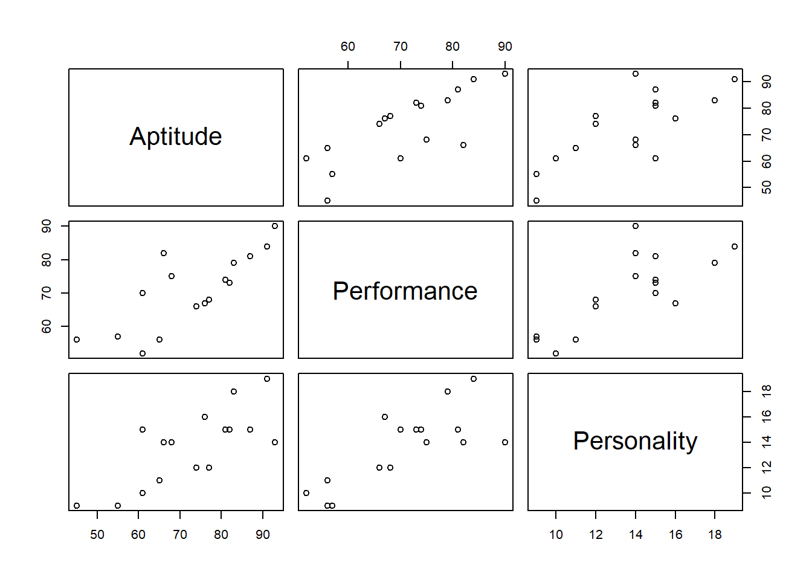

<!DOCTYPE html>
<html xmlns="http://www.w3.org/1999/xhtml" lang="en" xml:lang="en"><head>

<meta charset="utf-8">
<meta name="generator" content="quarto-1.4.551">

<meta name="viewport" content="width=device-width, initial-scale=1.0, user-scalable=yes">


<title>Correlation in R</title>
<style>
code{white-space: pre-wrap;}
span.smallcaps{font-variant: small-caps;}
div.columns{display: flex; gap: min(4vw, 1.5em);}
div.column{flex: auto; overflow-x: auto;}
div.hanging-indent{margin-left: 1.5em; text-indent: -1.5em;}
ul.task-list{list-style: none;}
ul.task-list li input[type="checkbox"] {
  width: 0.8em;
  margin: 0 0.8em 0.2em -1em; /* quarto-specific, see https://github.com/quarto-dev/quarto-cli/issues/4556 */ 
  vertical-align: middle;
}
/* CSS for syntax highlighting */
pre > code.sourceCode { white-space: pre; position: relative; }
pre > code.sourceCode > span { line-height: 1.25; }
pre > code.sourceCode > span:empty { height: 1.2em; }
.sourceCode { overflow: visible; }
code.sourceCode > span { color: inherit; text-decoration: inherit; }
div.sourceCode { margin: 1em 0; }
pre.sourceCode { margin: 0; }
@media screen {
div.sourceCode { overflow: auto; }
}
@media print {
pre > code.sourceCode { white-space: pre-wrap; }
pre > code.sourceCode > span { text-indent: -5em; padding-left: 5em; }
}
pre.numberSource code
  { counter-reset: source-line 0; }
pre.numberSource code > span
  { position: relative; left: -4em; counter-increment: source-line; }
pre.numberSource code > span > a:first-child::before
  { content: counter(source-line);
    position: relative; left: -1em; text-align: right; vertical-align: baseline;
    border: none; display: inline-block;
    -webkit-touch-callout: none; -webkit-user-select: none;
    -khtml-user-select: none; -moz-user-select: none;
    -ms-user-select: none; user-select: none;
    padding: 0 4px; width: 4em;
  }
pre.numberSource { margin-left: 3em;  padding-left: 4px; }
div.sourceCode
  {   }
@media screen {
pre > code.sourceCode > span > a:first-child::before { text-decoration: underline; }
}


body { background-color: #000066; }
#wrapper { width: 80%;
	        margin-left: auto;
	     	margin-right: auto;
		    background-color: #EAEAEA; }
header { background-color: #CCCCFF; }
h1 { margin: 0;
     padding: 10px; }
nav { float: left;
      width: 190px;
      padding: 10px;	  }


</style>

<nav>
    <a href="home.html">HOME</a><br>
    <a href="_hello.html">hello</a><br>
    <a href="quarto-learn.html">quarto-learn</a><br>
    <a href="GitHub-3.5.html">GitHub-3.5</a><br>
    <a href="correlation-in-R.html">correlation-in-R</a><br>
    <a href="the big R ch7.html">the big R ch7</a>
  </nav>


<script src="correlation-in-R_files/libs/clipboard/clipboard.min.js"></script>
<script src="correlation-in-R_files/libs/quarto-html/quarto.js"></script>
<script src="correlation-in-R_files/libs/quarto-html/popper.min.js"></script>
<script src="correlation-in-R_files/libs/quarto-html/tippy.umd.min.js"></script>
<script src="correlation-in-R_files/libs/quarto-html/anchor.min.js"></script>
<link href="correlation-in-R_files/libs/quarto-html/tippy.css" rel="stylesheet">
<link href="correlation-in-R_files/libs/quarto-html/quarto-syntax-highlighting.css" rel="stylesheet" id="quarto-text-highlighting-styles">
<script src="correlation-in-R_files/libs/bootstrap/bootstrap.min.js"></script>
<link href="correlation-in-R_files/libs/bootstrap/bootstrap-icons.css" rel="stylesheet">
<link href="correlation-in-R_files/libs/bootstrap/bootstrap.min.css" rel="stylesheet" id="quarto-bootstrap" data-mode="light">


</head>

<body class="fullcontent">

<div id="quarto-content" class="page-columns page-rows-contents page-layout-article">

<main class="content" id="quarto-document-content">

<header id="title-block-header" class="quarto-title-block default">
<div class="quarto-title">
<h1 class="title">Correlation in R</h1>
</div>


<div class="quarto-title-meta">

    
  
    
  </div>
  


</header>


<section id="correlation-in-r" class="level2">
<h2 class="anchored" data-anchor-id="correlation-in-r">Correlation in R</h2>
<p>在本节中，我将使用FarMisht示例。数据框架，farmish。</p>
<div class="cell">
<div class="sourceCode cell-code" id="cb1"><pre class="sourceCode r code-with-copy"><code class="sourceCode r"><span id="cb1-1"><a href="#cb1-1" aria-hidden="true" tabindex="-1"></a>Aptitude <span class="ot">&lt;-</span> <span class="fu">c</span>(<span class="dv">45</span>, <span class="dv">81</span>, <span class="dv">65</span>, <span class="dv">87</span>, <span class="dv">68</span>, <span class="dv">91</span>, <span class="dv">77</span>, <span class="dv">61</span>, <span class="dv">55</span>, <span class="dv">66</span>, <span class="dv">82</span>, <span class="dv">93</span>, </span>
<span id="cb1-2"><a href="#cb1-2" aria-hidden="true" tabindex="-1"></a> <span class="dv">76</span>, <span class="dv">83</span>, <span class="dv">61</span>, <span class="dv">74</span>)</span>
<span id="cb1-3"><a href="#cb1-3" aria-hidden="true" tabindex="-1"></a>Performance <span class="ot">&lt;-</span> <span class="fu">c</span>(<span class="dv">56</span>, <span class="dv">74</span>, <span class="dv">56</span>, <span class="dv">81</span>, <span class="dv">75</span>, <span class="dv">84</span>, <span class="dv">68</span>, <span class="dv">52</span>, <span class="dv">57</span>, <span class="dv">82</span>, <span class="dv">73</span>, <span class="dv">90</span>, </span>
<span id="cb1-4"><a href="#cb1-4" aria-hidden="true" tabindex="-1"></a> <span class="dv">67</span>, <span class="dv">79</span>, <span class="dv">70</span>, <span class="dv">66</span>)</span>
<span id="cb1-5"><a href="#cb1-5" aria-hidden="true" tabindex="-1"></a>Personality <span class="ot">&lt;-</span> <span class="fu">c</span>(<span class="dv">9</span>, <span class="dv">15</span>, <span class="dv">11</span>, <span class="dv">15</span>, <span class="dv">14</span>, <span class="dv">19</span>, <span class="dv">12</span>, <span class="dv">10</span>, <span class="dv">9</span>, <span class="dv">14</span>, <span class="dv">15</span>, <span class="dv">14</span>, </span>
<span id="cb1-6"><a href="#cb1-6" aria-hidden="true" tabindex="-1"></a> <span class="dv">16</span>, <span class="dv">18</span>, <span class="dv">15</span>, <span class="dv">12</span>)</span>
<span id="cb1-7"><a href="#cb1-7" aria-hidden="true" tabindex="-1"></a>FarMisht.frame <span class="ot">&lt;-</span> <span class="fu">data.frame</span>(Aptitude, Performance, Personality)</span></code><button title="Copy to Clipboard" class="code-copy-button"><i class="bi"></i></button></pre></div>
</div>
</section>
<section id="calculating-a-correlation-coefficien计算相关系数" class="level2">
<h2 class="anchored" data-anchor-id="calculating-a-correlation-coefficien计算相关系数">Calculating a correlation coefficien计算相关系数</h2>
<p>为了找到Aptitude和Per绩效之间关系的相关系数，我使用函数cor():</p>
<div class="cell">
<div class="sourceCode cell-code" id="cb2"><pre class="sourceCode r code-with-copy"><code class="sourceCode r"><span id="cb2-1"><a href="#cb2-1" aria-hidden="true" tabindex="-1"></a><span class="fu">with</span>(FarMisht.frame, <span class="fu">cor</span>(Aptitude,Performance))</span></code><button title="Copy to Clipboard" class="code-copy-button"><i class="bi"></i></button></pre></div>
<div class="cell-output cell-output-stdout">
<pre><code>[1] 0.7827927</code></pre>
</div>
</div>
<p>cor()计算的皮尔逊积矩相关系数</p>
<div class="cell">
<div class="sourceCode cell-code" id="cb4"><pre class="sourceCode r code-with-copy"><code class="sourceCode r"><span id="cb4-1"><a href="#cb4-1" aria-hidden="true" tabindex="-1"></a><span class="fu">cor</span>(FarMisht.frame,<span class="at">method =</span> <span class="st">"pearson"</span>)</span></code><button title="Copy to Clipboard" class="code-copy-button"><i class="bi"></i></button></pre></div>
<div class="cell-output cell-output-stdout">
<pre><code>             Aptitude Performance Personality
Aptitude    1.0000000   0.7827927   0.7499305
Performance 0.7827927   1.0000000   0.7709271
Personality 0.7499305   0.7709271   1.0000000</code></pre>
</div>
</div>
</section>
<section id="testing-a-correlation-coefficient检验相关系数" class="level2">
<h2 class="anchored" data-anchor-id="testing-a-correlation-coefficient检验相关系数">Testing a correlation coefficient检验相关系数</h2>
<p>为了找到相关系数，并同时对其进行检验，R提供了cor。</p>
<div class="cell">
<div class="sourceCode cell-code" id="cb6"><pre class="sourceCode r code-with-copy"><code class="sourceCode r"><span id="cb6-1"><a href="#cb6-1" aria-hidden="true" tabindex="-1"></a><span class="fu">with</span>(FarMisht.frame, <span class="fu">cor.test</span>(Aptitude,Performance, </span>
<span id="cb6-2"><a href="#cb6-2" aria-hidden="true" tabindex="-1"></a> <span class="at">alternative =</span> <span class="st">"greater"</span>))</span></code><button title="Copy to Clipboard" class="code-copy-button"><i class="bi"></i></button></pre></div>
<div class="cell-output cell-output-stdout">
<pre><code>
    Pearson's product-moment correlation

data:  Aptitude and Performance
t = 4.7068, df = 14, p-value = 0.0001684
alternative hypothesis: true correlation is greater than 0
95 percent confidence interval:
 0.5344414 1.0000000
sample estimates:
      cor 
0.7827927 </code></pre>
</div>
</div>
</section>
<section id="testing-the-difference-between-two-correlation-coefficients检验两个相关系数的差值" class="level2">
<h2 class="anchored" data-anchor-id="testing-the-difference-between-two-correlation-coefficients检验两个相关系数的差值">Testing the difference between two correlation coefficients检验两个相关系数的差值</h2>
<p>在前面的章节“两个相关系数是否不同?”我比较了 20名咨询师的能力倾向-绩效相关系数(.695) FarKlempt Robotics与16位FarMisht顾问的相关性(.783) 咨询。</p>
<p>比较从费雪对每个系数的r到z变换开始。 检验统计量(Z)是转换值之差除以 差值的标准误差。</p>
<p>如果您提供系数和，一个名为r.test()的函数会完成所有工作 样本量。这个函数位于心理包中，所以在Packages选项卡中， 单击插入。然后在“插入包”对话框中，键入psych。当心理 出现在Packages选项卡上，选择它的复选框</p>
<div class="cell">
<div class="sourceCode cell-code" id="cb8"><pre class="sourceCode r code-with-copy"><code class="sourceCode r"><span id="cb8-1"><a href="#cb8-1" aria-hidden="true" tabindex="-1"></a><span class="fu">library</span>(psych)</span>
<span id="cb8-2"><a href="#cb8-2" aria-hidden="true" tabindex="-1"></a><span class="fu">r.test</span>(<span class="at">r12=</span>.<span class="dv">783</span>, <span class="at">n=</span><span class="dv">16</span>, <span class="at">r34=</span>.<span class="dv">695</span>, <span class="at">n2=</span><span class="dv">20</span>)</span></code><button title="Copy to Clipboard" class="code-copy-button"><i class="bi"></i></button></pre></div>
<div class="cell-output cell-output-stdout">
<pre><code>Correlation tests 
Call:r.test(n = 16, r12 = 0.783, r34 = 0.695, n2 = 20)
Test of difference between two independent correlations 
 z value 0.53    with probability  0.6</code></pre>
</div>
</div>
<p>这个是关于你如何陈述论点的。第一个参数是第一个相关系数。二是样本量。第三个 参数是第二个相关系数，第四个是其样本量。 第一个系数的12标签和第二个系数的34标签表示 这两个系数是独立的。</p>
</section>
<section id="calculating-a-correlation-matrix计算相关矩阵" class="level2">
<h2 class="anchored" data-anchor-id="calculating-a-correlation-matrix计算相关矩阵">Calculating a correlation matrix计算相关矩阵</h2>
<p>除了查找单个相关系数外，cor()还可以查找数据帧的所有对明智的相关系数，从而得到相关矩阵:</p>
<div class="cell">
<div class="sourceCode cell-code" id="cb10"><pre class="sourceCode r code-with-copy"><code class="sourceCode r"><span id="cb10-1"><a href="#cb10-1" aria-hidden="true" tabindex="-1"></a> <span class="fu">cor</span>(FarMisht.frame)</span></code><button title="Copy to Clipboard" class="code-copy-button"><i class="bi"></i></button></pre></div>
<div class="cell-output cell-output-stdout">
<pre><code>             Aptitude Performance Personality
Aptitude    1.0000000   0.7827927   0.7499305
Performance 0.7827927   1.0000000   0.7709271
Personality 0.7499305   0.7709271   1.0000000</code></pre>
</div>
</div>
</section>
<section id="visualizing-correlation-matrices可视化相关矩阵" class="level2">
<h2 class="anchored" data-anchor-id="visualizing-correlation-matrices可视化相关矩阵">Visualizing correlation matrices可视化相关矩阵</h2>
<div class="cell">
<div class="sourceCode cell-code" id="cb12"><pre class="sourceCode r code-with-copy"><code class="sourceCode r"><span id="cb12-1"><a href="#cb12-1" aria-hidden="true" tabindex="-1"></a><span class="fu">pairs</span>(FarMisht.frame)</span></code><button title="Copy to Clipboard" class="code-copy-button"><i class="bi"></i></button></pre></div>
<div class="cell-output-display">
<div>
<figure class="figure">
<p></p>
</figure>
</div>
</div>
</div>
<p>Quarto enables you to weave together content and executable code into a finished document. To learn more about Quarto see <a href="https://quarto.org" class="uri">https://quarto.org</a>.</p>
</section>
<section id="running-code" class="level2">
<h2 class="anchored" data-anchor-id="running-code">Running Code</h2>
<p>When you click the <strong>Render</strong> button a document will be generated that includes both content and the output of embedded code. You can embed code like this:</p>
<div class="cell">
<div class="sourceCode cell-code" id="cb13"><pre class="sourceCode r code-with-copy"><code class="sourceCode r"><span id="cb13-1"><a href="#cb13-1" aria-hidden="true" tabindex="-1"></a><span class="dv">1</span> <span class="sc">+</span> <span class="dv">1</span></span></code><button title="Copy to Clipboard" class="code-copy-button"><i class="bi"></i></button></pre></div>
<div class="cell-output cell-output-stdout">
<pre><code>[1] 2</code></pre>
</div>
</div>
<p>You can add options to executable code like this</p>
<div class="cell">
<div class="cell-output cell-output-stdout">
<pre><code>[1] 4</code></pre>
</div>
</div>
<p>The <code>echo: false</code> option disables the printing of code (only output is displayed).</p>
</section>

</main>
<!-- /main column -->
<script id="quarto-html-after-body" type="application/javascript">
window.document.addEventListener("DOMContentLoaded", function (event) {
  const toggleBodyColorMode = (bsSheetEl) => {
    const mode = bsSheetEl.getAttribute("data-mode");
    const bodyEl = window.document.querySelector("body");
    if (mode === "dark") {
      bodyEl.classList.add("quarto-dark");
      bodyEl.classList.remove("quarto-light");
    } else {
      bodyEl.classList.add("quarto-light");
      bodyEl.classList.remove("quarto-dark");
    }
  }
  const toggleBodyColorPrimary = () => {
    const bsSheetEl = window.document.querySelector("link#quarto-bootstrap");
    if (bsSheetEl) {
      toggleBodyColorMode(bsSheetEl);
    }
  }
  toggleBodyColorPrimary();  
  const icon = "";
  const anchorJS = new window.AnchorJS();
  anchorJS.options = {
    placement: 'right',
    icon: icon
  };
  anchorJS.add('.anchored');
  const isCodeAnnotation = (el) => {
    for (const clz of el.classList) {
      if (clz.startsWith('code-annotation-')) {                     
        return true;
      }
    }
    return false;
  }
  const clipboard = new window.ClipboardJS('.code-copy-button', {
    text: function(trigger) {
      const codeEl = trigger.previousElementSibling.cloneNode(true);
      for (const childEl of codeEl.children) {
        if (isCodeAnnotation(childEl)) {
          childEl.remove();
        }
      }
      return codeEl.innerText;
    }
  });
  clipboard.on('success', function(e) {
    // button target
    const button = e.trigger;
    // don't keep focus
    button.blur();
    // flash "checked"
    button.classList.add('code-copy-button-checked');
    var currentTitle = button.getAttribute("title");
    button.setAttribute("title", "Copied!");
    let tooltip;
    if (window.bootstrap) {
      button.setAttribute("data-bs-toggle", "tooltip");
      button.setAttribute("data-bs-placement", "left");
      button.setAttribute("data-bs-title", "Copied!");
      tooltip = new bootstrap.Tooltip(button, 
        { trigger: "manual", 
          customClass: "code-copy-button-tooltip",
          offset: [0, -8]});
      tooltip.show();    
    }
    setTimeout(function() {
      if (tooltip) {
        tooltip.hide();
        button.removeAttribute("data-bs-title");
        button.removeAttribute("data-bs-toggle");
        button.removeAttribute("data-bs-placement");
      }
      button.setAttribute("title", currentTitle);
      button.classList.remove('code-copy-button-checked');
    }, 1000);
    // clear code selection
    e.clearSelection();
  });
    var localhostRegex = new RegExp(/^(?:http|https):\/\/localhost\:?[0-9]*\//);
    var mailtoRegex = new RegExp(/^mailto:/);
      var filterRegex = new RegExp('/' + window.location.host + '/');
    var isInternal = (href) => {
        return filterRegex.test(href) || localhostRegex.test(href) || mailtoRegex.test(href);
    }
    // Inspect non-navigation links and adorn them if external
 	var links = window.document.querySelectorAll('a[href]:not(.nav-link):not(.navbar-brand):not(.toc-action):not(.sidebar-link):not(.sidebar-item-toggle):not(.pagination-link):not(.no-external):not([aria-hidden]):not(.dropdown-item):not(.quarto-navigation-tool)');
    for (var i=0; i<links.length; i++) {
      const link = links[i];
      if (!isInternal(link.href)) {
        // undo the damage that might have been done by quarto-nav.js in the case of
        // links that we want to consider external
        if (link.dataset.originalHref !== undefined) {
          link.href = link.dataset.originalHref;
        }
      }
    }
  function tippyHover(el, contentFn, onTriggerFn, onUntriggerFn) {
    const config = {
      allowHTML: true,
      maxWidth: 500,
      delay: 100,
      arrow: false,
      appendTo: function(el) {
          return el.parentElement;
      },
      interactive: true,
      interactiveBorder: 10,
      theme: 'quarto',
      placement: 'bottom-start',
    };
    if (contentFn) {
      config.content = contentFn;
    }
    if (onTriggerFn) {
      config.onTrigger = onTriggerFn;
    }
    if (onUntriggerFn) {
      config.onUntrigger = onUntriggerFn;
    }
    window.tippy(el, config); 
  }
  const noterefs = window.document.querySelectorAll('a[role="doc-noteref"]');
  for (var i=0; i<noterefs.length; i++) {
    const ref = noterefs[i];
    tippyHover(ref, function() {
      // use id or data attribute instead here
      let href = ref.getAttribute('data-footnote-href') || ref.getAttribute('href');
      try { href = new URL(href).hash; } catch {}
      const id = href.replace(/^#\/?/, "");
      const note = window.document.getElementById(id);
      if (note) {
        return note.innerHTML;
      } else {
        return "";
      }
    });
  }
  const xrefs = window.document.querySelectorAll('a.quarto-xref');
  const processXRef = (id, note) => {
    // Strip column container classes
    const stripColumnClz = (el) => {
      el.classList.remove("page-full", "page-columns");
      if (el.children) {
        for (const child of el.children) {
          stripColumnClz(child);
        }
      }
    }
    stripColumnClz(note)
    if (id === null || id.startsWith('sec-')) {
      // Special case sections, only their first couple elements
      const container = document.createElement("div");
      if (note.children && note.children.length > 2) {
        container.appendChild(note.children[0].cloneNode(true));
        for (let i = 1; i < note.children.length; i++) {
          const child = note.children[i];
          if (child.tagName === "P" && child.innerText === "") {
            continue;
          } else {
            container.appendChild(child.cloneNode(true));
            break;
          }
        }
        if (window.Quarto?.typesetMath) {
          window.Quarto.typesetMath(container);
        }
        return container.innerHTML
      } else {
        if (window.Quarto?.typesetMath) {
          window.Quarto.typesetMath(note);
        }
        return note.innerHTML;
      }
    } else {
      // Remove any anchor links if they are present
      const anchorLink = note.querySelector('a.anchorjs-link');
      if (anchorLink) {
        anchorLink.remove();
      }
      if (window.Quarto?.typesetMath) {
        window.Quarto.typesetMath(note);
      }
      // TODO in 1.5, we should make sure this works without a callout special case
      if (note.classList.contains("callout")) {
        return note.outerHTML;
      } else {
        return note.innerHTML;
      }
    }
  }
  for (var i=0; i<xrefs.length; i++) {
    const xref = xrefs[i];
    tippyHover(xref, undefined, function(instance) {
      instance.disable();
      let url = xref.getAttribute('href');
      let hash = undefined; 
      if (url.startsWith('#')) {
        hash = url;
      } else {
        try { hash = new URL(url).hash; } catch {}
      }
      if (hash) {
        const id = hash.replace(/^#\/?/, "");
        const note = window.document.getElementById(id);
        if (note !== null) {
          try {
            const html = processXRef(id, note.cloneNode(true));
            instance.setContent(html);
          } finally {
            instance.enable();
            instance.show();
          }
        } else {
          // See if we can fetch this
          fetch(url.split('#')[0])
          .then(res => res.text())
          .then(html => {
            const parser = new DOMParser();
            const htmlDoc = parser.parseFromString(html, "text/html");
            const note = htmlDoc.getElementById(id);
            if (note !== null) {
              const html = processXRef(id, note);
              instance.setContent(html);
            } 
          }).finally(() => {
            instance.enable();
            instance.show();
          });
        }
      } else {
        // See if we can fetch a full url (with no hash to target)
        // This is a special case and we should probably do some content thinning / targeting
        fetch(url)
        .then(res => res.text())
        .then(html => {
          const parser = new DOMParser();
          const htmlDoc = parser.parseFromString(html, "text/html");
          const note = htmlDoc.querySelector('main.content');
          if (note !== null) {
            // This should only happen for chapter cross references
            // (since there is no id in the URL)
            // remove the first header
            if (note.children.length > 0 && note.children[0].tagName === "HEADER") {
              note.children[0].remove();
            }
            const html = processXRef(null, note);
            instance.setContent(html);
          } 
        }).finally(() => {
          instance.enable();
          instance.show();
        });
      }
    }, function(instance) {
    });
  }
      let selectedAnnoteEl;
      const selectorForAnnotation = ( cell, annotation) => {
        let cellAttr = 'data-code-cell="' + cell + '"';
        let lineAttr = 'data-code-annotation="' +  annotation + '"';
        const selector = 'span[' + cellAttr + '][' + lineAttr + ']';
        return selector;
      }
      const selectCodeLines = (annoteEl) => {
        const doc = window.document;
        const targetCell = annoteEl.getAttribute("data-target-cell");
        const targetAnnotation = annoteEl.getAttribute("data-target-annotation");
        const annoteSpan = window.document.querySelector(selectorForAnnotation(targetCell, targetAnnotation));
        const lines = annoteSpan.getAttribute("data-code-lines").split(",");
        const lineIds = lines.map((line) => {
          return targetCell + "-" + line;
        })
        let top = null;
        let height = null;
        let parent = null;
        if (lineIds.length > 0) {
            //compute the position of the single el (top and bottom and make a div)
            const el = window.document.getElementById(lineIds[0]);
            top = el.offsetTop;
            height = el.offsetHeight;
            parent = el.parentElement.parentElement;
          if (lineIds.length > 1) {
            const lastEl = window.document.getElementById(lineIds[lineIds.length - 1]);
            const bottom = lastEl.offsetTop + lastEl.offsetHeight;
            height = bottom - top;
          }
          if (top !== null && height !== null && parent !== null) {
            // cook up a div (if necessary) and position it 
            let div = window.document.getElementById("code-annotation-line-highlight");
            if (div === null) {
              div = window.document.createElement("div");
              div.setAttribute("id", "code-annotation-line-highlight");
              div.style.position = 'absolute';
              parent.appendChild(div);
            }
            div.style.top = top - 2 + "px";
            div.style.height = height + 4 + "px";
            div.style.left = 0;
            let gutterDiv = window.document.getElementById("code-annotation-line-highlight-gutter");
            if (gutterDiv === null) {
              gutterDiv = window.document.createElement("div");
              gutterDiv.setAttribute("id", "code-annotation-line-highlight-gutter");
              gutterDiv.style.position = 'absolute';
              const codeCell = window.document.getElementById(targetCell);
              const gutter = codeCell.querySelector('.code-annotation-gutter');
              gutter.appendChild(gutterDiv);
            }
            gutterDiv.style.top = top - 2 + "px";
            gutterDiv.style.height = height + 4 + "px";
          }
          selectedAnnoteEl = annoteEl;
        }
      };
      const unselectCodeLines = () => {
        const elementsIds = ["code-annotation-line-highlight", "code-annotation-line-highlight-gutter"];
        elementsIds.forEach((elId) => {
          const div = window.document.getElementById(elId);
          if (div) {
            div.remove();
          }
        });
        selectedAnnoteEl = undefined;
      };
        // Handle positioning of the toggle
    window.addEventListener(
      "resize",
      throttle(() => {
        elRect = undefined;
        if (selectedAnnoteEl) {
          selectCodeLines(selectedAnnoteEl);
        }
      }, 10)
    );
    function throttle(fn, ms) {
    let throttle = false;
    let timer;
      return (...args) => {
        if(!throttle) { // first call gets through
            fn.apply(this, args);
            throttle = true;
        } else { // all the others get throttled
            if(timer) clearTimeout(timer); // cancel #2
            timer = setTimeout(() => {
              fn.apply(this, args);
              timer = throttle = false;
            }, ms);
        }
      };
    }
      // Attach click handler to the DT
      const annoteDls = window.document.querySelectorAll('dt[data-target-cell]');
      for (const annoteDlNode of annoteDls) {
        annoteDlNode.addEventListener('click', (event) => {
          const clickedEl = event.target;
          if (clickedEl !== selectedAnnoteEl) {
            unselectCodeLines();
            const activeEl = window.document.querySelector('dt[data-target-cell].code-annotation-active');
            if (activeEl) {
              activeEl.classList.remove('code-annotation-active');
            }
            selectCodeLines(clickedEl);
            clickedEl.classList.add('code-annotation-active');
          } else {
            // Unselect the line
            unselectCodeLines();
            clickedEl.classList.remove('code-annotation-active');
          }
        });
      }
  const findCites = (el) => {
    const parentEl = el.parentElement;
    if (parentEl) {
      const cites = parentEl.dataset.cites;
      if (cites) {
        return {
          el,
          cites: cites.split(' ')
        };
      } else {
        return findCites(el.parentElement)
      }
    } else {
      return undefined;
    }
  };
  var bibliorefs = window.document.querySelectorAll('a[role="doc-biblioref"]');
  for (var i=0; i<bibliorefs.length; i++) {
    const ref = bibliorefs[i];
    const citeInfo = findCites(ref);
    if (citeInfo) {
      tippyHover(citeInfo.el, function() {
        var popup = window.document.createElement('div');
        citeInfo.cites.forEach(function(cite) {
          var citeDiv = window.document.createElement('div');
          citeDiv.classList.add('hanging-indent');
          citeDiv.classList.add('csl-entry');
          var biblioDiv = window.document.getElementById('ref-' + cite);
          if (biblioDiv) {
            citeDiv.innerHTML = biblioDiv.innerHTML;
          }
          popup.appendChild(citeDiv);
        });
        return popup.innerHTML;
      });
    }
  }
});
</script>
</div> <!-- /content -->


</body></html>